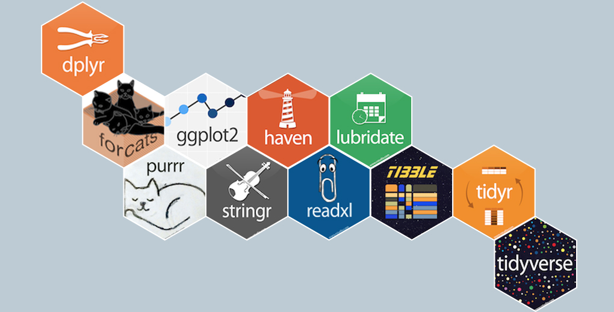

Code
library(tidyverse)The tidyverse is an opinionated collection of R packages designed for data science. All packages share an underlying design philosophy, grammar, and data structures.

dplyr is a core tidyverse package that provides a consistent and intuitive grammar for data manipulation.

First, we load the tidyverse suite of packages.
library(tidyverse)We will use the built-in mtcars dataset for these examples. For simplicity, we select a few columns and convert the row names to a proper column called car_name.
data(mtcars)
small_mtcars <- mtcars %>%
select(cyl, mpg, hp) %>%
head()
small_mtcars <- rownames_to_column(small_mtcars, var = "car_name")
small_mtcars car_name cyl mpg hp
1 Mazda RX4 6 21.0 110
2 Mazda RX4 Wag 6 21.0 110
3 Datsun 710 4 22.8 93
4 Hornet 4 Drive 6 21.4 110
5 Hornet Sportabout 8 18.7 175
6 Valiant 6 18.1 105The names() function returns a character vector of the column names in a data frame.
names(small_mtcars)[1] "car_name" "cyl" "mpg" "hp" The select() verb chooses columns by name.
small_mtcars %>% select(cyl, mpg, hp) cyl mpg hp
1 6 21.0 110
2 6 21.0 110
3 4 22.8 93
4 6 21.4 110
5 8 18.7 175
6 6 18.1 105select() can be used with helper functions like contains() to choose columns based on patterns in their names.
small_mtcars %>% select(contains("p")) mpg hp
1 21.0 110
2 21.0 110
3 22.8 93
4 21.4 110
5 18.7 175
6 18.1 105You can also select columns by their position.
small_mtcars %>% select(1, 2) car_name cyl
1 Mazda RX4 6
2 Mazda RX4 Wag 6
3 Datsun 710 4
4 Hornet 4 Drive 6
5 Hornet Sportabout 8
6 Valiant 6Use the - sign to deselect or drop columns.
small_mtcars %>% select(-cyl) car_name mpg hp
1 Mazda RX4 21.0 110
2 Mazda RX4 Wag 21.0 110
3 Datsun 710 22.8 93
4 Hornet 4 Drive 21.4 110
5 Hornet Sportabout 18.7 175
6 Valiant 18.1 105The rename() verb changes the name of a column.
small_mtcars %>% rename(new_cyl = cyl) car_name new_cyl mpg hp
1 Mazda RX4 6 21.0 110
2 Mazda RX4 Wag 6 21.0 110
3 Datsun 710 4 22.8 93
4 Hornet 4 Drive 6 21.4 110
5 Hornet Sportabout 8 18.7 175
6 Valiant 6 18.1 105mutate() adds new columns or transforms existing ones.
small_mtcars %>% mutate(new_cyl = cyl + 1) car_name cyl mpg hp new_cyl
1 Mazda RX4 6 21.0 110 7
2 Mazda RX4 Wag 6 21.0 110 7
3 Datsun 710 4 22.8 93 5
4 Hornet 4 Drive 6 21.4 110 7
5 Hornet Sportabout 8 18.7 175 9
6 Valiant 6 18.1 105 7if_elseif_else() is a vectorized conditional statement, useful inside mutate().
small_mtcars %>% mutate(new_cly_group = if_else(cyl > 6, 'big', 'small')) car_name cyl mpg hp new_cly_group
1 Mazda RX4 6 21.0 110 small
2 Mazda RX4 Wag 6 21.0 110 small
3 Datsun 710 4 22.8 93 small
4 Hornet 4 Drive 6 21.4 110 small
5 Hornet Sportabout 8 18.7 175 big
6 Valiant 6 18.1 105 smallcase_whencase_when() is useful for multiple conditions (like a multi-part if-else statement).
small_mtcars %>% mutate(cly_group = case_when(
cyl > 6 ~ "very big",
cyl > 4 ~ "big",
TRUE ~ "other"
)) car_name cyl mpg hp cly_group
1 Mazda RX4 6 21.0 110 big
2 Mazda RX4 Wag 6 21.0 110 big
3 Datsun 710 4 22.8 93 other
4 Hornet 4 Drive 6 21.4 110 big
5 Hornet Sportabout 8 18.7 175 very big
6 Valiant 6 18.1 105 bigtransmute() is like mutate(), but it drops all other columns, keeping only the newly created ones.
small_mtcars %>% transmute(new_cyl = cyl + 1) new_cyl
1 7
2 7
3 5
4 7
5 9
6 7filter() subsets rows based on logical conditions.
small_mtcars %>% filter(cyl > 5) car_name cyl mpg hp
1 Mazda RX4 6 21.0 110
2 Mazda RX4 Wag 6 21.0 110
3 Hornet 4 Drive 6 21.4 110
4 Hornet Sportabout 8 18.7 175
5 Valiant 6 18.1 105Separate conditions with a comma for an AND relationship.
small_mtcars %>% filter(cyl > 5, mpg > 20) car_name cyl mpg hp
1 Mazda RX4 6 21.0 110
2 Mazda RX4 Wag 6 21.0 110
3 Hornet 4 Drive 6 21.4 110Use the | operator for an OR relationship.
small_mtcars %>% filter(cyl > 5 | mpg > 20) car_name cyl mpg hp
1 Mazda RX4 6 21.0 110
2 Mazda RX4 Wag 6 21.0 110
3 Datsun 710 4 22.8 93
4 Hornet 4 Drive 6 21.4 110
5 Hornet Sportabout 8 18.7 175
6 Valiant 6 18.1 105sliceslice() allows you to select rows by their position.
Select the 5th row:
small_mtcars %>% slice(5) car_name cyl mpg hp
1 Hornet Sportabout 8 18.7 175Select a random sample of rows:
small_mtcars %>% sample_n(3) car_name cyl mpg hp
1 Hornet Sportabout 8 18.7 175
2 Mazda RX4 6 21.0 110
3 Datsun 710 4 22.8 93Let’s create a sample data frame with missing values (NA).
missing_df <- data.frame(
x = c(1, 2, NA, 4),
y = c("a", NA, "c", "d")
)is.na() returns a logical vector indicating which values are missing.
is.na(missing_df) x y
[1,] FALSE FALSE
[2,] FALSE TRUE
[3,] TRUE FALSE
[4,] FALSE FALSEYou can use filter() with !is.na() to remove rows with missing values in a specific column.
missing_df %>% filter(!is.na(y)) x y
1 1 a
2 NA c
3 4 dtidyr::drop_na() removes rows with any missing values.
missing_df %>% drop_na() x y
1 1 a
2 4 dgroup_by() groups the data by one or more variables. summarise() then collapses each group into a single-row summary.
Calculate the mean, min, max, and sum of mpg for each cylinder group.
mtcars %>%
group_by(cyl) %>%
summarise(
avg_mpg = mean(mpg),
min_mpg = min(mpg),
max_mpg = max(mpg),
sum_mpg = sum(mpg)
)# A tibble: 3 × 5
cyl avg_mpg min_mpg max_mpg sum_mpg
<dbl> <dbl> <dbl> <dbl> <dbl>
1 4 26.7 21.4 33.9 293.
2 6 19.7 17.8 21.4 138.
3 8 15.1 10.4 19.2 211.n() counts the total number of records in each group, while n_distinct() counts the number of unique values.
mtcars %>%
group_by(cyl) %>%
summarise(
n_mpg = n(),
distinct_n_mpg = n_distinct(mpg)
)# A tibble: 3 × 3
cyl n_mpg distinct_n_mpg
<dbl> <int> <int>
1 4 11 9
2 6 7 6
3 8 14 12Window functions are functions that operate on a “window” of data (e.g., within a group) but, unlike summarise(), they return a value for every row.
row_numberrow_number() assigns a unique rank to each row within a group.
small_mtcars %>%
group_by(cyl) %>%
mutate(rank = row_number(desc(mpg))) %>%
select(cyl, mpg, rank)# A tibble: 6 × 3
# Groups: cyl [3]
cyl mpg rank
<dbl> <dbl> <int>
1 6 21 2
2 6 21 3
3 4 22.8 1
4 6 21.4 1
5 8 18.7 1
6 6 18.1 4lag and leadlag() and lead() are useful for comparing a value to its predecessor or successor.
small_mtcars %>%
select(cyl, mpg) %>%
mutate(mpg_previous = lag(mpg, n = 1)) cyl mpg mpg_previous
1 6 21.0 NA
2 6 21.0 21.0
3 4 22.8 21.0
4 6 21.4 22.8
5 8 18.7 21.4
6 6 18.1 18.7cumsum() calculates the cumulative sum.
small_mtcars %>%
select(cyl, mpg) %>%
mutate(mpg_running_total = cumsum(mpg)) cyl mpg mpg_running_total
1 6 21.0 21.0
2 6 21.0 42.0
3 4 22.8 64.8
4 6 21.4 86.2
5 8 18.7 104.9
6 6 18.1 123.0arrange() sorts the rows of a data frame by one or more columns.
small_mtcars %>% arrange(cyl) car_name cyl mpg hp
1 Datsun 710 4 22.8 93
2 Mazda RX4 6 21.0 110
3 Mazda RX4 Wag 6 21.0 110
4 Hornet 4 Drive 6 21.4 110
5 Valiant 6 18.1 105
6 Hornet Sportabout 8 18.7 175Sort in descending order using desc().
small_mtcars %>% arrange(desc(cyl)) car_name cyl mpg hp
1 Hornet Sportabout 8 18.7 175
2 Mazda RX4 6 21.0 110
3 Mazda RX4 Wag 6 21.0 110
4 Hornet 4 Drive 6 21.4 110
5 Valiant 6 18.1 105
6 Datsun 710 4 22.8 93First, let’s create two small data frames to demonstrate joins.
left_data = small_mtcars %>% slice(1:3)
right_data = small_mtcars %>% slice(2:4)inner_join() returns only the rows where the key exists in both tables.
left_data %>% inner_join(right_data, by = "car_name") car_name cyl.x mpg.x hp.x cyl.y mpg.y hp.y
1 Mazda RX4 Wag 6 21.0 110 6 21.0 110
2 Datsun 710 4 22.8 93 4 22.8 93left_join() returns all rows from the left table, and matching rows from the right table.
left_data %>% left_join(right_data, by = "car_name", suffix = c("_l", "_r")) car_name cyl_l mpg_l hp_l cyl_r mpg_r hp_r
1 Mazda RX4 6 21.0 110 NA NA NA
2 Mazda RX4 Wag 6 21.0 110 6 21.0 110
3 Datsun 710 4 22.8 93 4 22.8 93anti_join() returns all rows from the left table that do not have a match in the right table.
left_data %>% anti_join(right_data, by = "car_name") car_name cyl mpg hp
1 Mazda RX4 6 21 110Reshaping data involves converting it between “wide” and “long” formats.
olddata_wide <- read.table(header = TRUE, text = '
subject sex control cond1 cond2
1 M 7.9 12.3 10.7
2 F 6.3 10.6 11.1
3 F 9.5 13.1 13.8
4 M 11.5 13.4 12.9
')pivot_longerpivot_longer() makes data “longer” by gathering multiple columns into key-value pairs.
data_long = olddata_wide %>%
pivot_longer(!c(subject, sex), names_to = 'condition', values_to = 'measurement')
data_long# A tibble: 12 × 4
subject sex condition measurement
<int> <chr> <chr> <dbl>
1 1 M control 7.9
2 1 M cond1 12.3
3 1 M cond2 10.7
4 2 F control 6.3
5 2 F cond1 10.6
6 2 F cond2 11.1
7 3 F control 9.5
8 3 F cond1 13.1
9 3 F cond2 13.8
10 4 M control 11.5
11 4 M cond1 13.4
12 4 M cond2 12.9pivot_widerpivot_wider() does the opposite, making data “wider” by spreading a key-value pair into multiple columns.
data_wide = data_long %>%
pivot_wider(names_from = condition, values_from = measurement)
data_wide# A tibble: 4 × 5
subject sex control cond1 cond2
<int> <chr> <dbl> <dbl> <dbl>
1 1 M 7.9 12.3 10.7
2 2 F 6.3 10.6 11.1
3 3 F 9.5 13.1 13.8
4 4 M 11.5 13.4 12.9stringr provides a consistent and user-friendly interface for common string operations.

x <- "I like horses."
str_length(x)[1] 14str_to_upper(x)[1] "I LIKE HORSES."str_detect() checks for the presence of a pattern and returns a logical vector.
word_list = c('abc', 'bbc', 'apple', 'bbaa', 'cc')
word_list %>% str_detect('a')[1] TRUE FALSE TRUE TRUE FALSEstr_replace_all() replaces all matches of a pattern with a new string.
text001 = "abcb"
text001 %>% str_replace_all('b', '1')[1] "a1c1"tidyr::separate() splits a column into multiple new columns based on a delimiter.
df_word <- data.frame(word = c('a-b', '1-c', 'c-c'))
df_word %>% separate(word, c('col1', 'col2'), '-') col1 col2
1 a b
2 1 c
3 c cstr_extract() pulls out the first match of a regular expression.
trx = 'abc1993 ccc'
trx %>% str_extract("(\\d)+")[1] "1993"lubridate simplifies working with dates and times in R.

library(lubridate)lubridate provides helper functions like ymd() to parse strings into dates reliably.
date3 = ymd('2023-01-01')
class(date3)[1] "Date"Easily extract components like year, month, or day from a date object.
now_time = now()
year(now_time)[1] 2025month(now_time)[1] 7wday(now_time, label = TRUE)[1] Tue
Levels: Sun < Mon < Tue < Wed < Thu < Fri < SatPerform calculations with date objects.
day1 = ymd('2022-01-01')
day2 = ymd('2023-02-03')
# Calculate the time difference
interval(day1, day2) %/% months(1)[1] 13data=small_mtcars$cyl
data[1] 6 6 4 6 8 6class(data)[1] "numeric"data=data.matrix(small_mtcars)
data car_name cyl mpg hp
[1,] 4 6 21.0 110
[2,] 5 6 21.0 110
[3,] 1 4 22.8 93
[4,] 2 6 21.4 110
[5,] 3 8 18.7 175
[6,] 6 6 18.1 105class(data)[1] "matrix" "array" data=as.list(small_mtcars)
data$car_name
[1] "Mazda RX4" "Mazda RX4 Wag" "Datsun 710"
[4] "Hornet 4 Drive" "Hornet Sportabout" "Valiant"
$cyl
[1] 6 6 4 6 8 6
$mpg
[1] 21.0 21.0 22.8 21.4 18.7 18.1
$hp
[1] 110 110 93 110 175 105class(data)[1] "list"https://dplyr.tidyverse.org/
https://stringr.tidyverse.org/
https://lubridate.tidyverse.org/